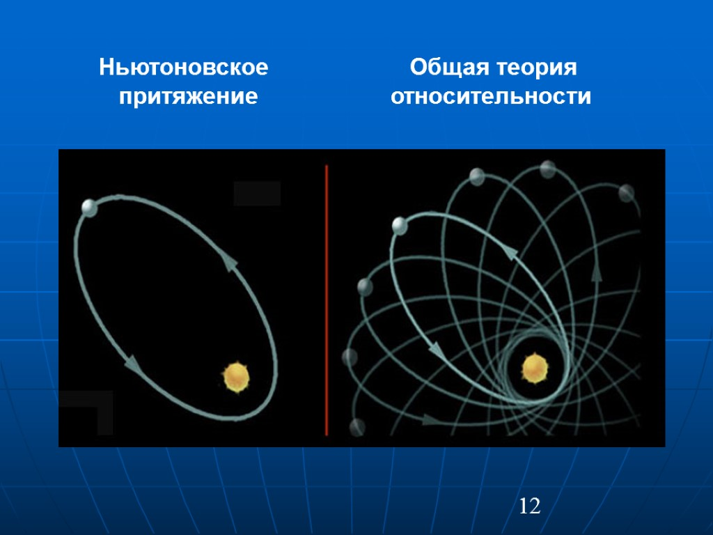

|

|
Ниже приведено доказательство ОТО
Доказательства общей теории относительности для тех, кто не понимает физику
30 июня 2018, 19:55
Всем известно о самой популярной теории гравитации — об общей теории относительности, на разработку которой Альберту Эйнштейну потребовалось 7 лет. Кратко ее суть можно выразить следующим образом: «Материя и энергия сообщают пространству-времени как изгибаться, а изгиб пространства-времени говори материи как двигаться». В механике существуют 10 уравнений для описания этих процессов, причем все они очень сложны и находятся в тесной связи.
Но не можем же мы так просто во все это поверить, даже если так сказал сам Эйнштейн. Нам нужны неоспоримые доказательства.
Божественный посланник
Из всех особенностей своей теории Эйнштейн особенно гордился возможность описать орбиту Меркурия. Эта ближайшая к Солнцу планета имеет слегка эллиптическую орбиту, и этот эллипс сам по себе медленно вращается. Другими словами, место максимальной удаленности Меркурия от Солнца изменяется со временем. Если применить закон всемирного тяготения Ньютона, то мы не заметим этой особенности — теория не полна. Если добавить еще гравитационное отталкивание и воздействие других планет, то почти все можно объяснить, но не все. В начале 1900-х годов это была известная проблема динамики Солнечной системы, но из-за нее не возникало множества споров. Ее просто добавили в список «странных вещей во Вселенной, которые мы не можем объяснить» с надеждой, что однажды решение найдется.
Однако Эйнштейна не устраивало такое положение вещей, к тому же он думал, что Меркурий дал ему важную зацепку. И вот, через годы, он смог разгадать тайну гравитации.
Гибкий свет
Прежде чем добавить последние штрихи ОТО, Эйнштейн пришел к удивительным выводам о природе гравитации. Если вы изолированы на ракетном корабле, который плавно и постоянно ускоряется с таким же темпом, как позволяет земная гравитация, то все внутри этого судна должно вести себя точно так же, как и на Земле — думал он. Объекты будут падать с той же скоростью, можно будет прочно стоять на ногах и пр.
Эта эквивалентность гравитации (как происходит на Земле) и ускорения (как происходит в ракете) побуждала Эйнштейна и дальше развивать свою теорию. Но в этом варианте было еще кое-что. Представьте, что луч света входит в окно с левой стороны корабля. Куда упадет свет?
С точки зрения стороннего наблюдателя ответ очевиден: свет движется по прямой линии, перпендикулярной траектории ракеты. Пока свет пересекал внутреннюю часть, ракета продвинулась вперед. И тогда свет войдет в одно окно, например, наверху ракеты, а выйдет снизу, ближе к двигателям.
Все происходящее внутри корабля выглядит странно. Чтобы свет проникал в окно около наконечника и выходил рядом с двигателями, путь луча должен быть изогнут. На самом деле, именно это вы и видите. Поскольку гравитация равна ускорению, то свет должен следовать изогнутым путям, огибая массивные объекты.
Трудно воспроизвести все это экспериментально, потому что для заметного результата потребуется очень тяжелый объект и свет, который проходит близко к поверхности. Но солнечное затмение 1919 года дало такую возможность, и экспедиция во главе с сэром Артуром Эддингтоном обнаружила подобный сдвиг дальнего звездного света — как и предполагал Эйнштейн в своей теории.
В красных тонах
Другой интересный результат дали эксперименты, основанные на эффекте Доплера, который применили неожиданным образом. Когда объект движется по направлению от вас, звук, который он создает, растягивается и переходит на более низкие частоты — суть этого эффекта. То же справедливо и для света: по мере удаления автомобиля кажется, что он становится слегка краснее, по сравнению с его цветом в статичном положении (чем краснее цвет, тем ниже частота). Так, сотрудники ГИБДД могут воспользоваться этим: их устройства посылают пучок света, который отскакивает от машины и помогает определить скорость.
Если движение изменяет длину волны света, то ускорение может так же: свет, перемещающийся из верха ракеты в низ, также становится более красным. Согласно ОТО, то что, справедливо для ускорения, справедливо и для гравитации. И правда: свет, излучаемый с поверхности Земли, будет смещаться к красным частотам по мере удаления.
Потребовалось несколько десятилетий для наглядной демонстрации этого эффекта, ведь он почти не заметен. В лаборатории Гарвардского университета в 1959 году Роберт Паунд и Глен Ребка провели эксперимент, который позволил измерить гравитационное красное смещение.
Бесконечные исследования
Даже со всеми доказательствами общая теория относительности постоянно тестируется. Любой изъян в великолепной работе Эйнштейна вызвал бы развитие новой теории гравитации, возможно, проложив путь к раскрытию полной квантовой природы этой силы.
Во всяком случае, ОТО достойно проходит все испытания от чувствительности радаров до гравитационного линзирования, от орбит звезд у черных дыр до ряби гравитационных волн и эволюции Вселенной. Вероятно, наследие Эйнштейна будет жить еще очень долго
|